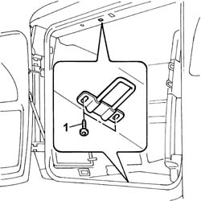

7020F18 rear door lock striker (one) - r+r
- Path
- Procedures > 70 FITTINGS > 7020 LOAD CARRYING COMPARTMENT DOORS > 7020F rear swinging door closure devices > 7020F18 rear door lock striker (one) - r+r
- Kind
- repair procedure (removal / refitting; the operation number is the code)
- Applies to
- all engines; all production periods
- Interactive page
- https://sloeber94.github.io/elrnDB-fDbl/en/#/2585086
Applies to: all engines; all production periods
 Removing
Removing
 Refitting
RefittingOp. 7040B22 LUGGAGE COMPARTMENT/LOAD PLATFORM MOULDING - R+R
1. Undo the bolts and remove the striker.

Applies to: all engines; all production periods
Refitting
RemovingPosition the striker and loosely tighten the fixing bolts.
Check that the striker lines up properly with its lock.
If it does not, adjust the striker, using the slotted holes.
Op. 7040B22 LUGGAGE COMPARTMENT/LOAD PLATFORM MOULDING - R+R